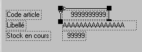

Tout objet est inclus dans une "boîte", que celle-ci soit "visible" (bordure) ou non. La boîte détermine une frontière, infranchissable par l'objet. Par exemple, si la boîte d'un texte est plus courte que le texte lui-même, le texte sera affiché tronqué.
De même, si la boîte d'une donnée en saisie est plus courte que son contenu, l'affichage de ce dernier est tronqué. Par contre, la saisie d'un contenu plus long que la boîte reste possible (la saisie opère un "scrolling" à l'intérieur de la boîte). Pour des raisons de présentation, il est donc possible de raccourcir les boîtes des données, tout en gardant la possibilité de saisir la donnée sur toute sa longueur.
Exemple :

Sur cet exemple, nous voyons les boîtes associées à chaque objet. Le texte contenu dans ces boîtes ne peut en déborder.
Remarques
L'option Boîtes visibles permet d'afficher en permanence les boîtes autour des objets.
Le choix Recalculer la taille des boîtes du menu Edition (Shift+F2) demande à Xwin de recalculer la taille des boîtes de tous les objets sélectionnés.
Le choix Etendre les boîtes au maximum du menu Edition (Ctrl+Shift+F2) demande à Xwin d'étendre les boîtes des objets Texte et Multi-choix sélectionnés (seuls ces objets sont concernés par ce choix).